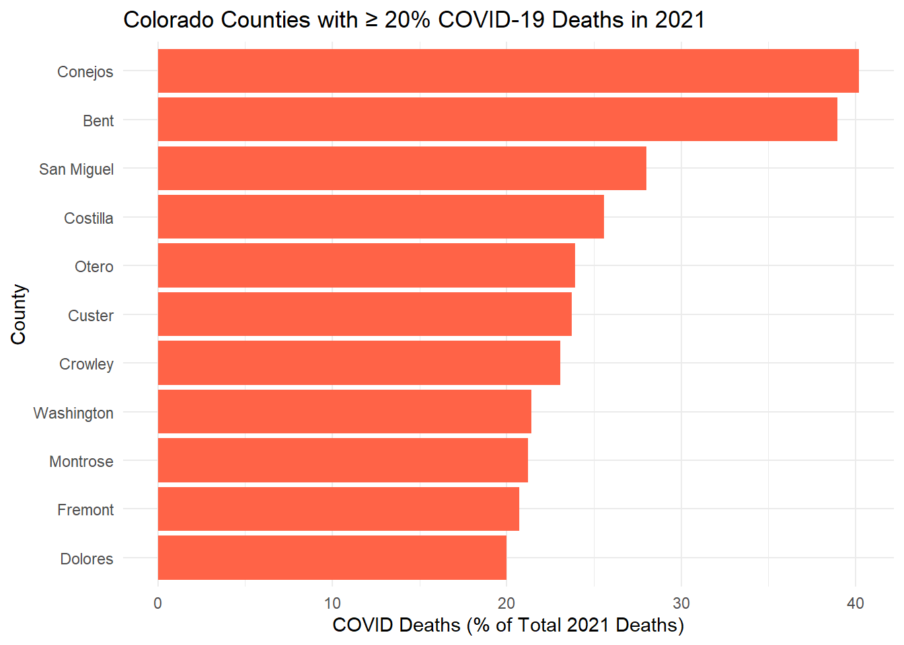
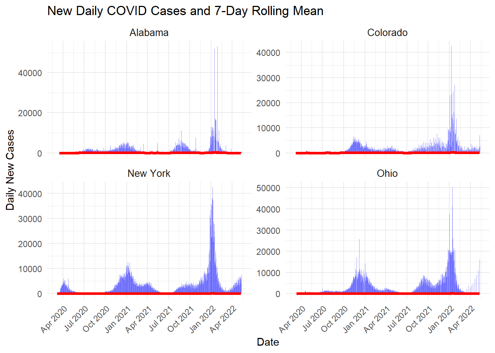
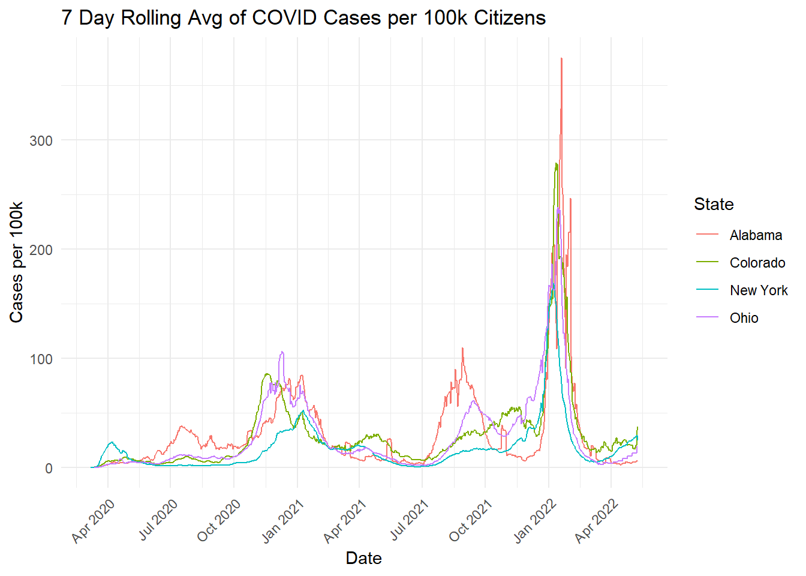
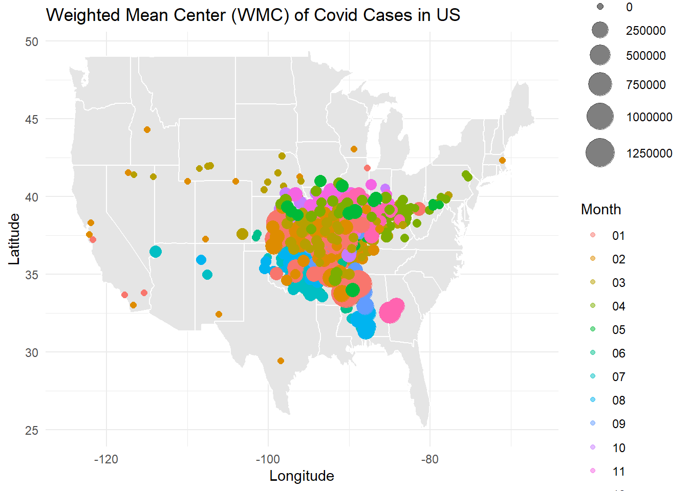
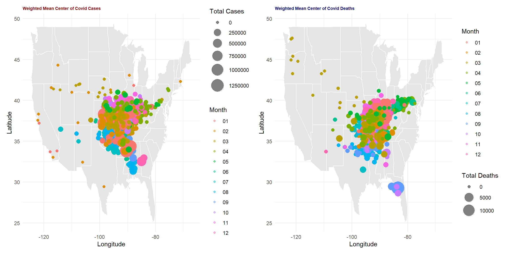

#load packages
library(tidyverse)
library(flextable)
library(zoo)
library(readr)
library(lubridate)
library(dplyr)
library(maps)
library(patchwork)index
ESS 330 - Lab 3 - COVID-19
Lab 03 Covid
Question 1
#Question1- Read csv from webpage
covid_raw <- read_csv("https://raw.githubusercontent.com/nytimes/covid-19-data/master/us-counties.csv")Question 2
#Question 2-my date object
txt <- "2022-02-01"
class(txt)[1] "character"date_example <- as.Date(txt)
class(date_example)[1] "Date"my.date <- as.Date("2022-02-01")
my.state <- "Colorado"
class(my.date)[1] "Date"#-leave raw data, start cleaning
#clean covid raw
covid_raw <- covid_raw %>%
na.omit()
#colorado dataframe with new cases and new deaths
covid_data_CO <- covid_raw %>%
filter(state == "Colorado") %>%
group_by(county, fips) %>%
arrange(date) %>%
mutate(new_cases = cases - lag(cases),
new_deaths = deaths - lag(deaths)) %>% ungroup()
#clean covid_data_co
covid_data_CO <- covid_data_CO %>%
na.omit()
#top 5 counties with most cumulative cases
covid_data_CO %>%
filter(date == my.date) %>%
slice_max(cases, n = 5) %>%
select(Date = date, County = county, 'Cumulative Cases' = cases) %>%
flextable() %>%
add_header_lines(paste0("Top 5 Counties by Cumulative Cases on ", my.date))Top 5 Counties by Cumulative Cases on 2022-02-01 | ||
|---|---|---|
Date | County | Cumulative Cases |
2022-02-01 | El Paso | 170,673 |
2022-02-01 | Denver | 159,022 |
2022-02-01 | Arapahoe | 144,255 |
2022-02-01 | Adams | 126,768 |
2022-02-01 | Jefferson | 113,240 |
#top 5 counties with most new cases
covid_data_CO %>%
filter(date == my.date) %>%
slice_max(new_cases, n = 5) %>%
select(Date = date, County = county, `New Cases` = new_cases) %>%
flextable() %>%
add_header_lines(paste0("Top 5 Counties by New Cases on ", my.date))Top 5 Counties by New Cases on 2022-02-01 | ||
|---|---|---|
Date | County | New Cases |
2022-02-01 | El Paso | 630 |
2022-02-01 | Arapahoe | 401 |
2022-02-01 | Denver | 389 |
2022-02-01 | Adams | 326 |
2022-02-01 | Jefferson | 291 |
Question 3
#Question 3: Normalizing Data
pop_raw <- read_csv('https://www2.census.gov/programs-surveys/popest/datasets/2020-2023/counties/totals/co-est2023-alldata.csv') %>%
mutate(
STATE = sprintf("%02d", as.numeric(STATE)),
COUNTY = sprintf("%03d", as.numeric(COUNTY)),
fips = paste0(STATE, COUNTY)
) %>%
select(fips, contains("NAME"), contains("2021"), DEATHS2021) %>%
filter(str_sub(fips, 3, 5) != "000")
names(pop_raw) [1] "fips" "STNAME" "CTYNAME"
[4] "POPESTIMATE2021" "NPOPCHG2021" "BIRTHS2021"
[7] "DEATHS2021" "NATURALCHG2021" "INTERNATIONALMIG2021"
[10] "DOMESTICMIG2021" "NETMIG2021" "RESIDUAL2021"
[13] "GQESTIMATES2021" "RBIRTH2021" "RDEATH2021"
[16] "RNATURALCHG2021" "RINTERNATIONALMIG2021" "RDOMESTICMIG2021"
[19] "RNETMIG2021" dim(pop_raw)[1] 3144 19glimpse(pop_raw)Rows: 3,144
Columns: 19
$ fips <chr> "01001", "01003", "01005", "01007", "01009", "01…
$ STNAME <chr> "Alabama", "Alabama", "Alabama", "Alabama", "Ala…
$ CTYNAME <chr> "Autauga County", "Baldwin County", "Barbour Cou…
$ POPESTIMATE2021 <dbl> 59203, 239439, 24533, 22359, 59079, 10143, 18890…
$ NPOPCHG2021 <dbl> 288, 6212, -436, 171, -28, -86, -135, -565, -163…
$ BIRTHS2021 <dbl> 686, 2337, 270, 240, 654, 111, 227, 1250, 392, 2…
$ DEATHS2021 <dbl> 696, 2948, 390, 325, 875, 160, 297, 1843, 592, 4…
$ NATURALCHG2021 <dbl> -10, -611, -120, -85, -221, -49, -70, -593, -200…
$ INTERNATIONALMIG2021 <dbl> 15, 105, 0, 1, 9, 1, 5, 12, 22, 7, 20, 1, 0, -1,…
$ DOMESTICMIG2021 <dbl> 242, 6972, -313, 254, 141, -42, -75, -70, -6, 28…
$ NETMIG2021 <dbl> 257, 7077, -313, 255, 150, -41, -70, -58, 16, 29…
$ RESIDUAL2021 <dbl> 41, -254, -3, 1, 43, 4, 5, 86, 21, 2, 18, 7, 8, …
$ GQESTIMATES2021 <dbl> 484, 3351, 2248, 1994, 616, 1578, 285, 5407, 856…
$ RBIRTH2021 <dbl> 11.615503, 9.888589, 10.908650, 10.775136, 11.06…
$ RDEATH2021 <dbl> 11.78483, 12.47392, 15.75694, 14.59133, 14.80717…
$ RNATURALCHG2021 <dbl> -0.1693222, -2.5853351, -4.8482890, -3.8161941, …
$ RINTERNATIONALMIG2021 <dbl> 0.25398330, 0.44428836, 0.00000000, 0.04489640, …
$ RDOMESTICMIG2021 <dbl> 4.0975973, 29.5007468, -12.6459537, 11.4036860, …
$ RNETMIG2021 <dbl> 4.3515806, 29.9450352, -12.6459537, 11.4485824, …colorado_pop2021 <- pop_raw %>%
filter(STNAME == "Colorado") %>%
select(STNAME, POPESTIMATE2021, fips)
range(colorado_pop2021$POPESTIMATE2021)[1] 741 737287combined_data <- covid_data_CO %>%
inner_join(colorado_pop2021, by = "fips") %>%
mutate(
per_capita_cumulative_cases = cases / POPESTIMATE2021,
per_capita_new_cases = new_cases / POPESTIMATE2021,
per_capita_new_deaths = new_deaths / POPESTIMATE2021)
#top 5 counties with the most cumulative cases
combined_data %>%
filter(date == my.date) %>%
slice_max(per_capita_cumulative_cases, n = 5) %>%
select(Date = date, County = county, `Per Capita Cumulative Cases` = per_capita_cumulative_cases) %>%
flextable() %>%
add_header_lines(paste0("Top Counties by Per Capita Cumulative Cases on ", my.date))Top Counties by Per Capita Cumulative Cases on 2022-02-01 | ||
|---|---|---|
Date | County | Per Capita Cumulative Cases |
2022-02-01 | Crowley | 0.5117698 |
2022-02-01 | Bent | 0.4118749 |
2022-02-01 | Pitkin | 0.3429659 |
2022-02-01 | Lincoln | 0.3424082 |
2022-02-01 | Logan | 0.3047701 |
#top 5 counties with most new cases per cap
combined_data %>%
filter(date == my.date) %>%
slice_max(per_capita_new_cases, n = 5) %>%
select(Date = date, County = county, `Per Capita New Cases` = per_capita_new_cases) %>%
flextable() %>%
add_header_lines(paste0("Top Counties by Per Capita New Cases on ", my.date))Top Counties by Per Capita New Cases on 2022-02-01 | ||
|---|---|---|
Date | County | Per Capita New Cases |
2022-02-01 | Crowley | 0.009764603 |
2022-02-01 | Bent | 0.004120622 |
2022-02-01 | Sedgwick | 0.003869304 |
2022-02-01 | Washington | 0.002875924 |
2022-02-01 | Las Animas | 0.002651039 |
Part 3: The range for CO counties populations in 2022 was 741 to 737,287.
Question 4
#Question 4: Rolling Thresholds
#step 1-Filter data to last 14 days
max_date <- max(combined_data$date, na.rm = TRUE)
covid_last14 <- combined_data %>%
filter(date >= (max_date - 13) & date <= max_date)
#Calc total new cases/100,000 people over last 14
last14_casesummary <- covid_last14 %>%
group_by(fips, county, POPESTIMATE2021) %>%
summarize(
total_new_cases = sum(new_cases, na.rm = TRUE), .groups = "drop") %>%
mutate(new_cases_per_100k = (total_new_cases / POPESTIMATE2021) * 100000)
#make table
top5_counties <- last14_casesummary %>%
slice_max(new_cases_per_100k, n = 5) %>%
select(County = county,
`Total New Cases` = total_new_cases,
`New Cases per 100k` = new_cases_per_100k)
top5_counties %>%
flextable() %>%
add_header_lines("Top 5 Colorado Counties by New Cases per 100,000 in the Last 14 Days")Top 5 Colorado Counties by New Cases per 100,000 in the Last 14 Days | ||
|---|---|---|
County | Total New Cases | New Cases per 100k |
Mineral | 8 | 861.1410 |
Boulder | 2,437 | 745.0685 |
Larimer | 1,943 | 535.6350 |
Denver | 3,784 | 531.8588 |
Jefferson | 2,646 | 455.6546 |
#count exceptions
watchlist_count <- last14_casesummary %>%
filter(new_cases_per_100k > 100) %>% nrow()
print(watchlist_count)[1] 53There were 53 counties that exceeded this watchlist parameter: “More than 100 new cases per 100,000 residents over the past 14 days”.
Question 5
#Question 5: Death Toll
my.date = as.Date("2022-02-01")
lubridate::year(my.date)[1] 2022lubridate::month(my.date)[1] 2lubridate::yday(my.date)[1] 32covid_deaths_2021 <- combined_data %>%
filter(date >= as.Date("2021-01-01") & date <= as.Date("2021-12-31")) %>% group_by(fips, county) %>%
summarize(total_covid_deaths_2021 = sum(new_deaths, na.rm = TRUE), .groups = "drop")
deaths_ratio <- covid_deaths_2021 %>%
inner_join(pop_raw %>% select(fips, DEATHS2021), by = "fips") %>%
mutate(covid_death_ratio = (total_covid_deaths_2021 / DEATHS2021) * 100)
high_ratio_counties <- deaths_ratio %>%
filter(covid_death_ratio >= 20)
ggplot(high_ratio_counties, aes(x = reorder(county, covid_death_ratio), y = covid_death_ratio)) +
geom_col(fill = "tomato") +
coord_flip() + labs(title = "Colorado Counties with ≥ 20% COVID-19 Deaths in 2021",
x = "County",
y = "COVID Deaths (% of Total 2021 Deaths)") + theme_minimal()
Question 6
#Question 6- Multi state
#prep states
states_daily_cases <- covid_raw %>%
filter(state %in% c("New York", "Colorado", "Alabama", "Ohio")) %>%
group_by(state, county) %>%
arrange(date, .by_group = TRUE) %>%
mutate(new_cases = pmax(cases - lag(cases), 0)) %>%
ungroup() %>% group_by(state, date) %>% summarize(daily_cases = sum(new_cases, na.rm = TRUE), .groups = "drop")
#prep census (01 is AL, 08 is CO, 36 is NY, 39 is OH)
states_popdata <-read_csv('https://www2.census.gov/programs-surveys/popest/datasets/2020-2023/counties/totals/co-est2023-alldata.csv') %>%
mutate(
STATE = sprintf("%02d", as.numeric(STATE)),
COUNTY = sprintf("%03d", as.numeric(COUNTY)),
fips = paste0(STATE, COUNTY)) %>%
select(fips, STATE, COUNTY, contains("NAME"), POPESTIMATE2021) %>%
filter(STATE %in% c("01", "08", "36", "39"), str_sub(fips, 3, 5) != "000")
#pop to state level
states_pop <- states_popdata %>%
group_by(STNAME) %>%
summarize(pop_2021 = sum(POPESTIMATE2021, na.rm = TRUE), .groups = "drop")
#join the two
state_cases_with_pop <- states_daily_cases %>%
left_join(states_pop, by = c("state" = "STNAME"))
#Compute the rolling 7day mean
state_cases_with_pop <- state_cases_with_pop %>%
group_by(state) %>%
mutate(cases_per_100k = (daily_cases / pop_2021) * 100000,
rolling_mean_7day_per_100k = rollmean(cases_per_100k, k = 7, fill = NA, align = "center")) %>% ungroup()
#plot 1- new cases with rolling mean
ggplot(state_cases_with_pop, aes(x = date)) +
geom_col(aes(y = daily_cases), fill = "blue", alpha = 0.4) +
geom_line(aes(y = rolling_mean_7day_per_100k), color = "red", linewidth = 1.3, na.rm = TRUE) +
facet_wrap(~ state, scales = "free_y") +
scale_x_date(date_breaks = "3 months", date_labels = "%b %Y") +
labs(
title = "New Daily COVID Cases and 7-Day Rolling Mean",
x = "Date",
y = "Daily New Cases") + theme_minimal() +
theme(strip.text = element_text(size = 10),
axis.text.x = element_text(angle = 45, hjust = 1))
#plot 2
ggplot(state_cases_with_pop, aes(x = date, y = rolling_mean_7day_per_100k, color = state)) +
geom_line() +
scale_x_date(date_breaks = "3 months", date_labels = "%b %Y") +
labs(title = "7 Day Rolling Avg of COVID Cases per 100k Citizens",
x = "Date",
y = "Cases per 100k",
color = "State") +
theme_minimal() + theme(axis.text.x = element_text(angle = 45, hjust =1))

Analysis:
Scaling by population results in a better comparison. Without this element, we are comparing small states to big states without regard to their size, which strongly impacts the number of cases they have. In this way, scaling by population keeps us from comparing “apples to oranges”.
In this way, scaling by population makes New York look better than Alabama because Alabamas smaller population results in its per capita cases being higher (due to scaling by pop.)
Question 7
#7-Space/Time
statecoords <- read_csv("data/county-centroids.csv") %>%
select(fips, LAT, LON) %>%
mutate(fips = as.character(fips))
all_dates <- expand.grid(fips = unique(statecoords$fips), date = unique(covid_raw$date))
covid_raw <- all_dates %>%
left_join(covid_raw, by = c("fips", "date")) %>%
mutate(cases = ifelse(is.na(cases), 0, cases)) %>%
arrange(fips, date) %>%
group_by(fips) %>%
mutate(new_cases = pmax(cases - lag(cases), 0, na.rm = TRUE)) %>%
ungroup()
#make DF, fix the filter to get correct number of daily points
Covidspatial <- covid_raw %>%
group_by(fips, date) %>%
summarize(daily_cases = sum(new_cases, na.rm = TRUE), .groups = "drop") %>%
inner_join(statecoords, by = "fips")
#compute wmc
wmc_df <- Covidspatial %>%
group_by(date) %>%
summarise(
total_cases = sum(daily_cases, na.rm = TRUE),
WMC_LONG = ifelse(total_cases > 0, sum(LON * daily_cases, na.rm = TRUE) / total_cases, NA), WMC_LAT = ifelse(total_cases > 0, sum(LAT * daily_cases, na.rm = TRUE) / total_cases, NA), month = format(date, "%m"), .groups = "drop") %>% mutate(month = as.factor(month))
#plot
ggplot() +
borders("state", fill = "gray90", colour = "white") +
geom_point(data = wmc_df, aes(x = WMC_LONG, y = WMC_LAT, colour = month, size = total_cases), alpha = 0.5) +
scale_size_continuous(range = c(2, 10)) +
labs(title = "Weighted Mean Center (WMC) of Covid Cases in US",
x = "Longitude",
y = "Latitude",
color = "Month",
size = "Total Cases") + theme_minimal()
The WMC of Covid cases in the US looks to be weighted towards the East coast, likely explained due to the higher population of states in the Eastern US. As time passes, we can also see that there was pull from both the East and West coasts, with the WMC sitting around Illinois but spreading out as covid spread across the US. Additionally, we see a spread towards the later months of the year to the south, which could be explained by later hotspots in Florida, where restrictions and prevention measures were less severe.
Question 8
# Question 8
# Filter data
covid_filtered <- covid_raw %>%
select(fips, date, cases, deaths) %>%
filter(!is.na(fips))
# Compute daily new cases and deaths
covid_filtered <- covid_filtered %>%
group_by(fips) %>%
arrange(date) %>%
mutate(
new_cases = pmax(cases - lag(cases), 0, na.rm = TRUE),
new_deaths = pmax(deaths - lag(deaths), 0, na.rm = TRUE)
) %>%
ungroup()
# Merge covid data with state coordinates
covid_spatial2 <- covid_filtered %>%
left_join(statecoords, by = "fips") %>%
drop_na(LAT, LON)
# WMC for Cases
wmc_cases_df <- covid_spatial2 %>%
group_by(date) %>%
summarize(
total_cases = sum(new_cases, na.rm = TRUE),
WMC_LON_cases = ifelse(total_cases > 0, sum(LON * new_cases, na.rm = TRUE) / total_cases, NA),
WMC_LAT_cases = ifelse(total_cases > 0, sum(LAT * new_cases, na.rm = TRUE) / total_cases, NA),
month = format(date, "%m"),
.groups = "drop"
)
# WMC for Deaths
wmc_deaths_df <- covid_spatial2 %>%
group_by(date) %>%
summarize(
total_deaths = sum(new_deaths, na.rm = TRUE),
WMC_LON_deaths = ifelse(total_deaths > 0, sum(LON * new_deaths, na.rm = TRUE) / total_deaths, NA),
WMC_LAT_deaths = ifelse(total_deaths > 0, sum(LAT * new_deaths, na.rm = TRUE) / total_deaths, NA),
month = format(date, "%m"),
.groups = "drop"
)
# Cases Plot - red
P_cases <- ggplot() +
borders("state", fill = "gray90", colour = "white") +
geom_point(data = wmc_cases_df, aes(x = WMC_LON_cases, y = WMC_LAT_cases, colour = month, size = total_cases), alpha = 0.5) +
scale_size_continuous(range = c(2, 10)) +
labs(title = "Weighted Mean Center of Covid Cases", x = "Longitude", y = "Latitude", color = "Month", size = "Total Cases") +
theme_minimal() +
theme(plot.title = element_text(color = "darkred", size = 7, face = "bold"))
# Deaths Plot - navy
P_deaths <- ggplot() +
borders("state", fill = "gray90", colour = "white") +
geom_point(data = wmc_deaths_df, aes(x = WMC_LON_deaths, y = WMC_LAT_deaths, colour = month, size = total_deaths), alpha = 0.5) +
scale_size_continuous(range = c(2, 10)) +
labs(title = "Weighted Mean Center of Covid Deaths", x = "Longitude", y = "Latitude", color = "Month", size = "Total Deaths") +
theme_minimal() +
theme(plot.title = element_text(color = "navy", size = 7, face = "bold"))
# Patchwork to combine plots
final_plot <- P_cases + P_deaths + plot_layout(ncol = 2)
print(final_plot)
Here in this plot illustrating the WMC of both Cases and Deaths by Covid in the US, we can find that there was a very similar shape of origination of Covid. Additionally, we find that both cases and deaths were similarly spatially spread across the US, but there are sonme key spatial-temporal differences. One differences we find is the way that deaths is found spreading Northeast of the center. This movement of deaths can likely be explained by overwhelmed hospitals in the denser US East Coast states. Additionally, we find a later hotspot of deaths in Florida, likely explained by a large old-age retiree community and less restrictions which allowed for the spread we see as the cases also spread towards Florida during a similar period. Ulitmately both plots tell a similar story but allow for more information to be gained when comparing the two.